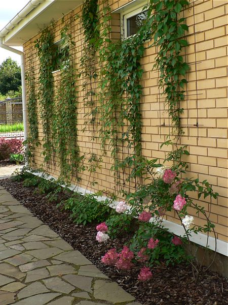
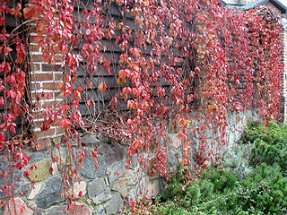
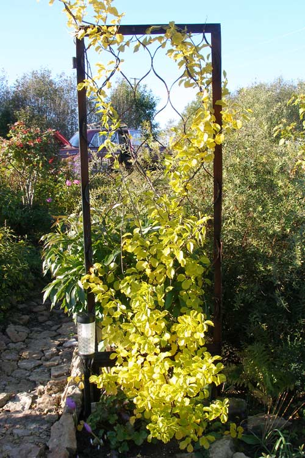
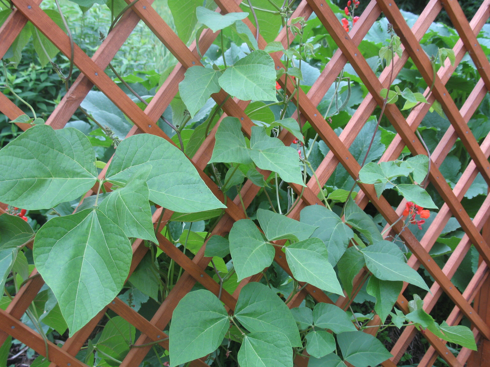
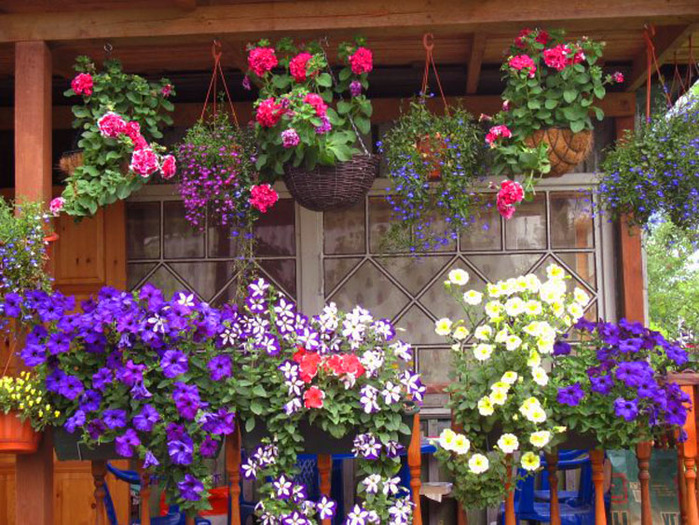
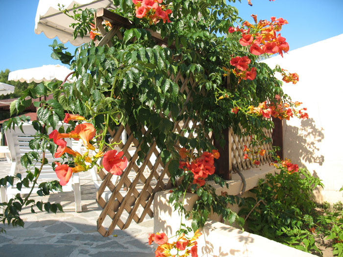
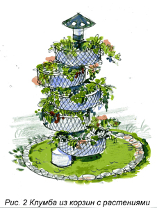
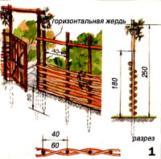
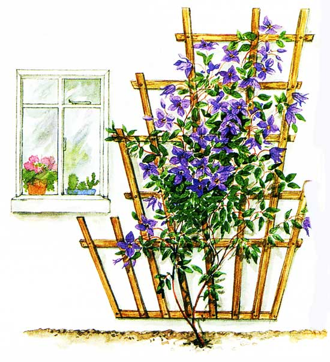

| Вертикальне озеленення |
|
Одним з елементів ландшафтного дизайну є вертикальне озеленення – це озеленення вертикальних поверхонь, тобто поверхонь будинків, альтанок, споруд, парканів, огорож в'юнкими рослинами, стриженими деревами і деякими іншими методами.

За допомогою цієї процедури можна досягти багатьох ідей: приховати господарські приміщення, зонувати територію і багато іншого.
Види вертикального озеленення.
Шпалерна огорожа.
 За допомогою шпалерних загорож можна створювати не менш декоративні живоплоти, ніж з ліан. Вони є однорядними посадками, що сформовані на опорах – шпалерах шляхом стрижки у вигляді вузької стінки. Найкращим матеріалом для шпалерної огорожі є верби, груші, яблуні, в'язи, глід, малина.
Також, популярними є композиції в горщиках (контейнерні, ампельні рослини). 
Це може бути красиво оформлена піраміда з ящиків, в яких ростуть квітучі рослини; кашпо на вертикальній підставці, яка прикрасить ганок, або вхід в альтанку. Рослини у таких композиціях повинні бути посухо витривалими. Найвідомішими серед них є: фуксія, бегонія, лобелія, пеларгонія, часто використовується і настурція. Серед них ще є безліч й інших сортів, кожне з яких має свої особливості. Тому краще всього у виборі ампельних рослин, довіритися фахівцям. Новинкою контейнерного вертикального озеленення є підвісні квіткові композиції і вертикальні клумби, що розташовані в ємкостях. 
Вертикальні клумби можуть виготовлятися з бетону, пластику або неіржавіючого металу. Такі композиції частіше використовуються в міському озелененні, але якщо вам вдасться органічно вписати громіздку клумбу до свого саду, то з'явиться можливість щороку створювати неповторні вертикальні композиції з однорічників.
Важливим питанням у створенні саду є правильний вибір матеріалів опор для в'юнких рослин, їх створення використовують дерево та метал, значно рідше пластик, камінь або цегла.
Дерев’яні опори.  Для більшості присадибних ділянок кращий матеріал для виготовлення опор – дерево. Це природний, екологічний матеріал, з яким зручно працювати. Він легкий, досить еластичний і гнучкий, але в той же час міцний. Дерев'яна опора і пущена по ній рослинність, як правило, добре поєднуються естетично. Конструкції з деревини виглядають в саду натурально і природно, добре вписуючись в структуру присадибної ділянки практично будь-якої стильової гамми.
Металеві опори. |